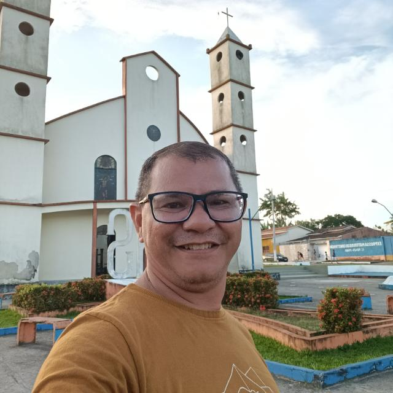

INFORMAÇÕES GERAIS
- Nome: Luis Sérgio Moreira da Silva
- Endereço: Passagem Fé em Deus, 41A -Tenoné - Belém - Pará 66820-295
- Email: sergiovsk@gmail.com
- Telefone: (91) 98759-6616 e (91) 99342-8511
- Bacharel e Licenciado em Química (2005), Graduado em Análise e Desenvolvimento de Sistemas
(2020-2022), Fluente em Inglês, bom comunicador e dotado de iniciativa.
FORMAÇÃO
- Graduado em Bacharelado em Química, UFPA (2005).
- Licenciado em Química, UNIFRAN (2019).
- Graduado em Análise e Desenvolvimento de Sistemas, Estácio de Sá (2022).
- Formado em curso livre de Inglês. Aslan, conclusão em 1992.
- Possuo certificado de proficiência em Língua Inglesa (NÍVEL C2) pela Universidade de
Michigan nos Estados Unidos obtido em 1999.
EXPERIÊNCIA
- (2023 -Atual) - Analista de Suporte Computacional - Curso Webster.
- (1999 - 2023) - Professor e Coordenador Pedagógico - Curso Webster.
- (2006 - 2010) - Professor de Química - Colégio Somatório
- (2003 - 2004) - Professor de Inglês - Centro Cultural Brasil Estados Unidos
(CCBEU).
- (1993 - 2001) - Professor de Inglês - Beverly American English Course
ATIVIDADES COMPLEMENTARES
- 1. SILVA, Luis Sérgio Moreira da, PINHEIRO, J. C., CARDOSO,F.J.B, SANTOS,C.B.R.,
MARTINS,E.A., MACEDO,W.J.C.
DESENVOLVIMENTO DE DERIVADOS DAARTEMISININA COM
SUBSTITUINTES C-9 E 10-DEOXOARTEMISININA USANDO MÉTODOS DE
QUÍMICA QUÂNTICA E QUIMIOMETRIA, 2007. (Congresso, Apresentação de
Trabalho)
- 2. Ricardo M. Miranda, SILVA, Luis Sérgio Moreira da, PINHEIRO, J. C., Rogério T.
Kondo, NETTO, A. V. G., FREM, R. C. G., A. E.MAURO, ESTUDO TEÓRICO DO
ESPECTRO VIBRACIONAL DO COMPOSTO [PdCl2(HPz)2], 2006. (Simpósio,
Apresentação de Trabalho)
- 3. LUIS SÉRGIO MOREIRA DA SILVA. DESENVOLVIMENTO DE DERIVADOS
DAARTEMISININA COM SUBSTITUINTES C-9 E 10-DEOXOARTEMISININA
USANDO MÉTODOS DE QUÍMICA QUÂNTICA E QUIMIOMETRIA. 2006.
Curso (Química Bacharelado- Trabalhos de conclusão de curso de Graduação) - Universidade Federal do Pará